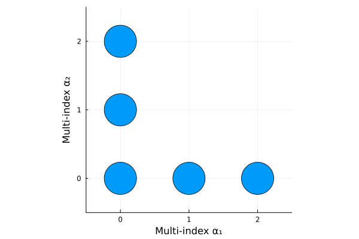
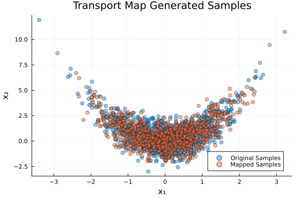
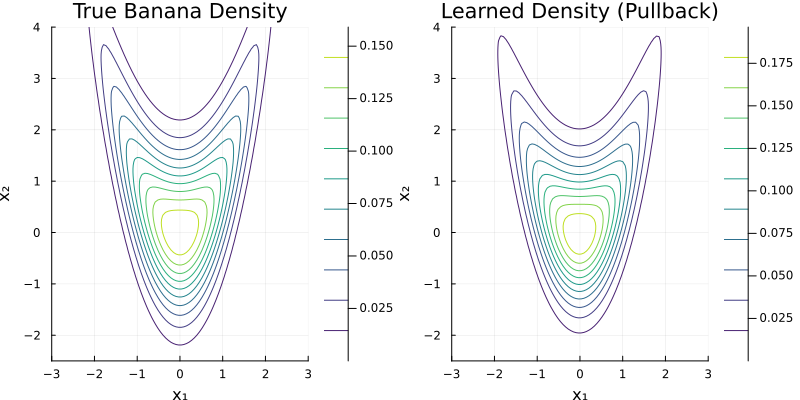
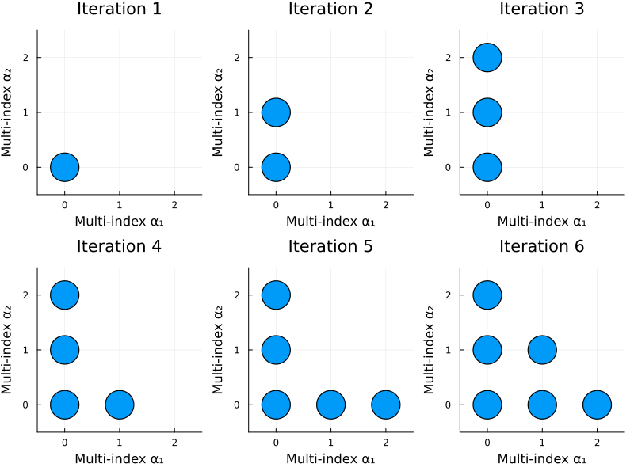
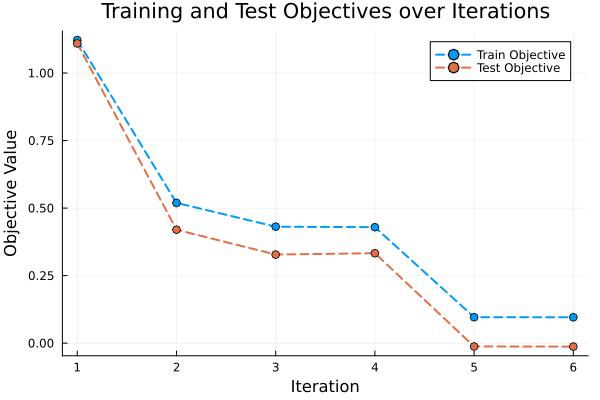

Banana: Adaptive Transport Map from Samples
This implements the ATM algorithm from [3] to approximate the banana distribution using an adaptive polynomial transport map.
As an example, we once again consider the banana distribution defined by the density:
\[p(x) = \phi(x_1) \cdot \phi(x_2 - x_1^2)\]
where $\phi$ is the standard normal PDF.
We start with the necessary packages:
using TransportMaps
using Distributions
using LinearAlgebra
using PlotsGenerating Target Samples
The generation of samples from the banana distribution is done in the same way as in the example Banana: Map from Samples. Here, we use $N = 500$ samples for the ATM learning.
banana_density(x) = pdf(Normal(), x[1]) * pdf(Normal(), x[2] - x[1]^2)
num_samples = 500
function generate_banana_samples(n_samples::Int)
samples = Matrix{Float64}(undef, n_samples, 2)
count = 0
while count < n_samples
x1 = randn() * 2
x2 = randn() * 3 + x1^2
if rand() < banana_density([x1, x2]) / 0.4
count += 1
samples[count, :] = [x1, x2]
end
end
return samples
end
println("Generating samples from banana distribution...")
target_samples = generate_banana_samples(num_samples)
println("Generated $(size(target_samples, 1)) samples")Generating samples from banana distribution...
Generated 500 samplesCreating the Transport Map
First, create a linear transport map as a starting point. This is also the default behavior of the optimize_adaptive_transportmap function, which standardizes the samples using a linear map based on their marginal mean and standard deviation when no explicit linear map is provided.
L = LinearMap(target_samples)LinearMap with 2 dimensions
μ: [-0.011088538255028061, 0.7629210378819774]
σ: [0.8947986642400197, 1.423646369218898]
Then, we perform adaptive transport map learning with k-fold cross-validation. We use the setup as in [3]: We select a Hermite basis with linearization, use the modified Softplus rectifier with parameter $\beta = 2$ and $k = 5$ folds. We set the maximum number of terms to 3 and 6 for the two components, respectively.
Calling the optimize_adaptive_transportmap function performs the adaptive learning of map terms and returns the learned map, optimization results, selected terms, and selected folds. We can provide the initial linear map L to standardize the samples before learning the ATM, and also specify options, such as the rectifier, basis and options for the optimization process. The function returns the ComposedMap of the linear map and the learned adaptive transport map.
M, results, selected_terms, selected_folds = optimize_adaptive_transportmap(
target_samples, [3, 6], 5, L, Softplus(2.))Start k-fold optimization of component 1 with 5 folds
* Fold 1 / 5
* Optimizing term 1 / 3
* Adding term 2 / 3
* Adding term 3 / 3
* Fold 2 / 5
* Optimizing term 1 / 3
* Adding term 2 / 3
* Adding term 3 / 3
* Fold 3 / 5
* Optimizing term 1 / 3
* Adding term 2 / 3
* Adding term 3 / 3
* Fold 4 / 5
* Optimizing term 1 / 3
* Adding term 2 / 3
* Adding term 3 / 3
* Fold 5 / 5
* Optimizing term 1 / 3
* Adding term 2 / 3
* Adding term 3 / 3
Best fold: 2
Selected 2 terms (avg validation objective 0.5038115997458918)
Full-data objective: 0.4989989986646635
Final optimizer status: Converged with 4 iterations
Start k-fold optimization of component 2 with 5 folds
* Fold 1 / 5
* Optimizing term 1 / 6
* Adding term 2 / 6
* Adding term 3 / 6
* Adding term 4 / 6
* Adding term 5 / 6
* Adding term 6 / 6
* Fold 2 / 5
* Optimizing term 1 / 6
* Adding term 2 / 6
* Adding term 3 / 6
* Adding term 4 / 6
* Adding term 5 / 6
* Adding term 6 / 6
* Fold 3 / 5
* Optimizing term 1 / 6
* Adding term 2 / 6
* Adding term 3 / 6
* Adding term 4 / 6
* Adding term 5 / 6
* Adding term 6 / 6
* Fold 4 / 5
* Optimizing term 1 / 6
* Adding term 2 / 6
* Adding term 3 / 6
* Adding term 4 / 6
* Adding term 5 / 6
* Adding term 6 / 6
* Fold 5 / 5
* Optimizing term 1 / 6
* Adding term 2 / 6
* Adding term 3 / 6
* Adding term 4 / 6
* Adding term 5 / 6
* Adding term 6 / 6
Best fold: 3
Selected 5 terms (avg validation objective 0.22898116552074957)
Full-data objective: 0.07270885964176386
Final optimizer status: Converged with 11 iterationsThe adaptive map learning prints out information about the learning process, including the selected terms and the training and test objectives for each fold.
We see, that in the first component, the ATM selected 2 terms (out of the maximum 3), and in the second component, it selected all 5 out of the maximum 6 terms. The number of selected terms is chosen based on the test objective across the folds.
To visualized which terms were selected, we can plot the multi-index sets of the learned ATM:
ind_atm = getmultiindexsets(M.polynomialmap[2])
dim = scatter(ind_atm[:, 1], ind_atm[:, 2], ms=30, legend=false)
plot!(xlims=(-0.5, maximum(ind_atm[:, 1]) + 0.5), ylims=(-0.5, maximum(ind_atm[:, 2]) + 0.5),
aspect_ratio=1, xlabel="Multi-index α₁", ylabel="Multi-index α₂")
xticks!(0:maximum(ind_atm[:, 1]))
yticks!(0:maximum(ind_atm[:, 2])) We see that the ATM algorithm selected terms in an L-shape pattern, indicating that lower-order interactions were prioritized.
Testing the Map
new_samples = generate_banana_samples(1000)
norm_samples = randn(1000, 2)
mapped_banana_samples = inverse(M, norm_samples)Visualizing Results
Let's create a scatter plot comparing the original samples with the mapped samples to see how well our transport map learned the distribution:
p11 = scatter(new_samples[:, 1], new_samples[:, 2],
label="Original Samples", alpha=0.5, color=1,
title="Original Banana Distribution Samples",
xlabel="x₁", ylabel="x₂")
scatter!(p11, mapped_banana_samples[:, 1], mapped_banana_samples[:, 2],
label="Mapped Samples", alpha=0.5, color=2,
title="Transport Map Generated Samples",
xlabel="x₁", ylabel="x₂")
plot(p11, size=(600, 400))
Density Comparison
Similarly, we can compare the true banana density with the learned density obtained via the pullback of the composed map:
x₁ = range(-3, 3, length=100)
x₂ = range(-2.5, 4.0, length=100)
true_density = [banana_density([x1, x2]) for x2 in x₂, x1 in x₁]
learned_density = [pullback(M, [x1, x2]) for x2 in x₂, x1 in x₁]
p3 = contour(x₁, x₂, true_density,
title="True Banana Density",
xlabel="x₁", ylabel="x₂",
colormap=:viridis, levels=10)
p4 = contour(x₁, x₂, learned_density,
title="Learned Density (Pullback)",
xlabel="x₁", ylabel="x₂",
colormap=:viridis, levels=10)
plot(p3, p4, layout=(1, 2), size=(800, 400))
Plot iterations
Additionally, we can visualize the selected terms and optimization objectives over the iterations for the second component of the ATM. First, we retrieve the best fold based on the selected folds during learning:
map_index = 2 # Choose 2nd component
best_fold = selected_folds[map_index]
res_best = results[map_index][best_fold]Then, we can plot the selected terms at each iteration:
max_1 = maximum(res_best.terms[end][:, 1])
max_2 = maximum(res_best.terms[end][:, 2])
p = plot(layout=(2, 3), xlims=(-0.5, max_1 + 0.5), ylims=(-0.5, max_2 + 0.5),
aspect_ratio=1, xlabel="Multi-index α₁", ylabel="Multi-index α₂", legend=false,)
for (i, term) in enumerate(res_best.terms)
scatter!(p, term[:, 1], term[:, 2], ms=20, title="Iteration $i", subplot=i)
end
xticks!(0:max_1)
yticks!(0:max_2)
plot!(p, size=(800, 600))
We can see that in the last iteration, the interaction term $(1, 1)$ was added. However, in the end, this term was not selected in the final map based on the cross-validation. To better understand the selection, we can also plot the training and test objectives over the iterations:
Compare optimization objectives
plot(res_best.train_objectives, label="Train Objective", lw=2, ls=:dash, marker=:o)
plot!(res_best.test_objectives, label="Test Objective", lw=2, ls=:dash, marker=:o)
plot!(xlabel="Iteration", ylabel="Objective Value",
title="Training and Test Objectives over Iterations")
plot!(size=(600, 400))
Here, we see that the test objective increased in the last iteration, indicating overfitting, which is why the last added term was not selected in the final adaptive transport map.
This page was generated using Literate.jl.